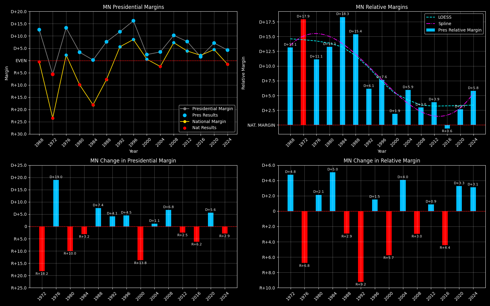

← Back to Map

Minnesota (MN) statewide
Minnesota (MN) — Data
| Year | D | R | Margin | Rel. Margin | Nat. Margin | Margin Δ | Rel. Margin Δ | Nat. Margin Δ |
|---|
| 1976 | 1,070,440(56.6%) | 819,395(43.4%) | D+13.3 | D+11.0 | D+2.3 | | | |
| 1980 | 954,173(52.2%) | 873,268(47.8%) | D+4.4 | D+14.7 | R+10.3 | R+8.9 | D+3.7 | R+12.6 |
| 1984 | 1,036,364(50.1%) | 1,032,603(49.9%) | D+0.2 | D+18.4 | R+18.2 | R+4.2 | D+3.7 | R+7.9 |
| 1988 | 1,109,471(53.6%) | 962,337(46.4%) | D+7.1 | D+14.8 | R+7.7 | D+6.9 | R+3.7 | D+10.6 |
| 1992 | 1,020,997(57.7%) | 747,841(42.3%) | D+15.4 | D+8.2 | D+7.2 | D+8.3 | R+6.6 | D+14.9 |
| 1996 | 1,120,380(59.4%) | 766,395(40.6%) | D+18.8 | D+9.2 | D+9.6 | D+3.3 | D+1.0 | D+2.4 |
| 2000 | 1,168,266(51.3%) | 1,109,659(48.7%) | D+2.6 | D+2.1 | D+0.5 | R+16.2 | R+7.1 | R+9.1 |
| 2004 | 1,445,014(51.8%) | 1,346,695(48.2%) | D+3.5 | D+6.0 | R+2.5 | D+0.9 | D+3.9 | R+3.0 |
| 2008 | 1,573,354(55.2%) | 1,275,409(44.8%) | D+10.5 | D+2.9 | D+7.5 | D+6.9 | R+3.1 | D+10.0 |
| 2012 | 1,546,167(53.9%) | 1,320,225(46.1%) | D+7.9 | D+3.9 | D+4.0 | R+2.6 | D+0.9 | R+3.5 |
| 2016 | 1,367,705(50.8%) | 1,322,949(49.2%) | D+1.7 | R+0.7 | D+2.3 | R+6.2 | R+4.5 | R+1.7 |
| 2020 | 1,717,077(53.6%) | 1,484,065(46.4%) | D+7.3 | D+2.7 | D+4.5 | D+5.6 | D+3.4 | D+2.2 |
| 2024 | 1,656,979(52.2%) | 1,519,032(47.8%) | D+4.3 | D+5.8 | R+1.5 | R+2.9 | D+3.1 | R+6.0 |
Column explanations
- Year
- Election year.
- D
- Number of votes for the Democratic candidate (raw count).
- R
- Number of votes for the Republican candidate (raw count).
- Margin
- Margin between the two major-party candidates ((D - R)/(D + R)).
- Rel. Margin
- The presidential margin relative to the national presidential margin (Margin - Nat. Margin).
- Nat. Margin
- The national presidential margin for that year ((D_total - R_total)/(D_total + R_total)).
- Δ
- Change (delta) in the value from the previous election year. Blank if no data for previous year.